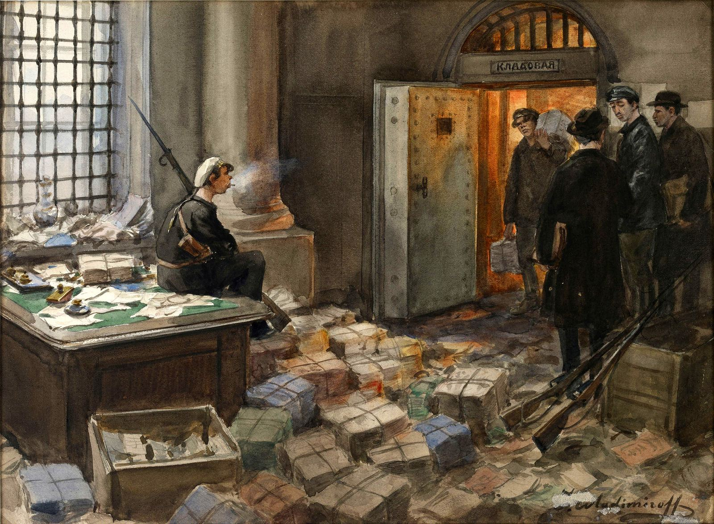
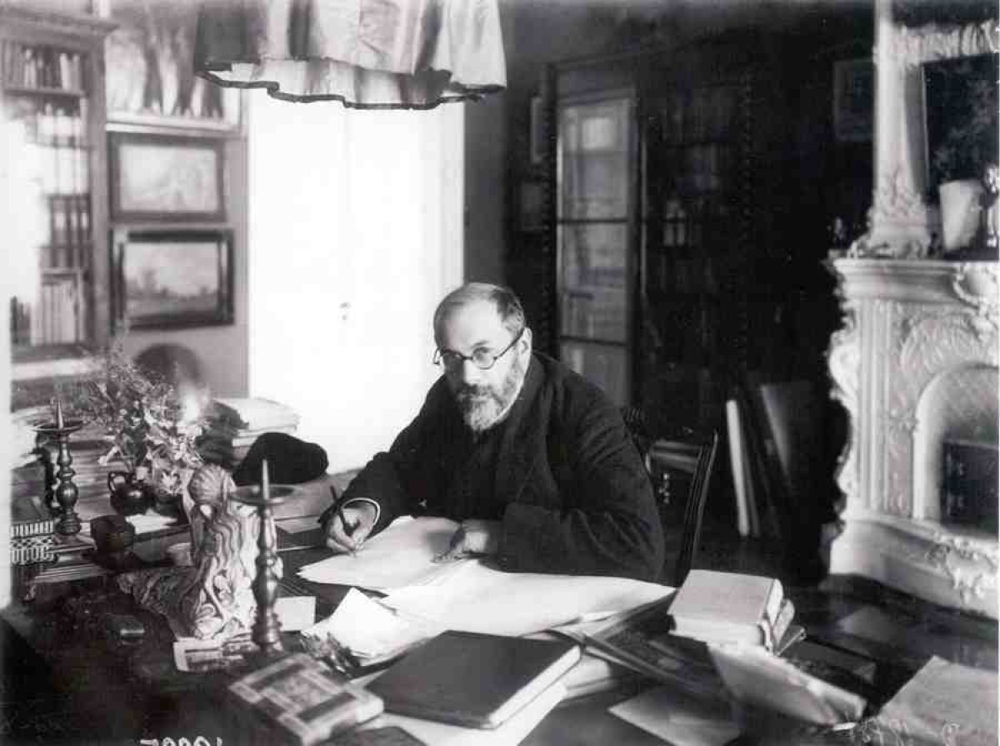
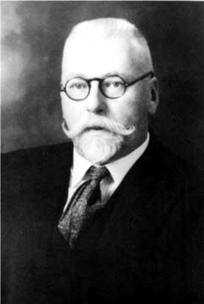
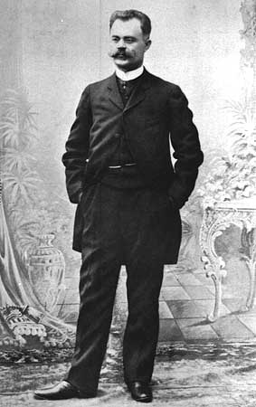

Лучше всего ощущали себя семьи, которые сумели эмигрировать и у которых была недвижимость за рубежом
«Никто не верил, что за банком деньги могли пропасть». Как россияне пытались сберечь свои капиталы от войны и революций 105 лет назад. Вопрос о том, как сохранить и приумножить свои сбережения, волнует нас в любую эпоху. Особенно страшно остаться без средств к существованию во времена потрясений. Банки.ру выяснял, как в 1917 году россияне пытались сберечь свои капиталы и почему это практически никому не удалось. Героями нашего текста стали банкир, художник, балерина и промышленник. Мы рассуждаем о том, как получить большие проценты по своим накоплениям, в 1917 году сохранить хоть что-то было равносильно подвигу. Банки.ру обратился к воспоминаниям наших соотечественников, чтобы узнать, как они спасали свои сбережения во время войны и двух революций.

Поместить капитал в реальные ценности
Состоятельным и финансово грамотным людям была очевидна связь между войной и обесценением сбережений. Именно от этого они и старались защитить свои деньги. Одна из стратегий заключалась в том, чтобы диверсифицировать активы, приобрести несомненные ценности и акции тех предприятий, которые вероятнее всего «пойдут в рост».
«С начала войны я призадумался над тем, как уберечь от обесценивания тот небольшой капитал, коим тогда обладал. Надо было поместить его в такие реальные ценности, которые в мировой расценке не будут подвержены падению», — вспоминает бывший управляющий отделением Волжско-Камского банка в Екатеринбурге Владимир Аничков. Первое, что пришло в голову, — купить платину, но этот план пришлось отбросить, так как незадолго до начала Первой мировой войны был введен особый закон против спекуляции, предусматривающий реквизицию платины и уголовную ответственность за его нарушение. «Золото же было свободно в обращении. При нашем банке был аффинажный завод, и я решил на часть своих сбережений купить золото, благо его можно было заложить в нашем же банке. Оно стоило до войны пять с половиной рублей за золотник. Мой годовой заработок был в то время очень большим — не менее шестидесяти тысяч рублей в год, но жил я широко и откладывал мало. Однако покупка золота тоже была связана с риском, связанным с введением монополии. Купив около пуда золота и заложив его в банке, я решил, не лучше ли на случай объявления монополии начать скупать прииски. Часть своих капиталов я держал в акциях нашего банка в расчете пройти в члены правления, для чего нужно было предъявить восемьдесят акций. Помимо этих бумаг, я верил в акции уральских горных заводов, имевших огромные земельные пространства», — пишет Аничков.
«Все советовали, как лучше всего спрятать деньги и имущество»
После Февральской революции стало понятно, что защищать свои сбережения надо не только от инфляции, но и от экспроприации. Состоятельные люди массово начали скупать ценности и заполнять ими банковские ячейки.
«Мои самые крупные и ценные вещи хранились… у Фаберже, но после переворота он попросил меня взять их к себе, так как он опасался обыска и конфискации драгоценностей у него в сейфах, что в действительности вскоре и произошло. Эти драгоценности, вместе с вынесенными мною лично из дома, я уложила в особый ящик установленного размера и сдала на хранение в Казенную ссудную казну на Фонтанке и сама дала им оценку, умышленно уменьшив ее в сравнении с действительной их стоимостью, чтобы не платить крупную сумму за их хранение. Мне было тяжело в материальном отношении, и платить много я не могла. Директор Ссудной казны был крайне удивлен такой низкой оценке. «Ведь их тут на несколько миллионов», — заметил он мне, когда я сдавала свои вещи», — пишет Матильда Кшесинская.
Об этом же писала в своих воспоминаниях двоюродная сестра Николая II — великая княгиня Мария Павловна. «В начале лета я уехала в Москву. В это время все друг другу советовали, как лучше всего спрятать драгоценности и имущество. Наши деньги и ценные бумаги были конфискованы в самом начале революции, и у нас оставалось лишь то немногое, что находилось в частных банках. У меня также было достаточно драгоценностей, которые сами по себе составляли большой капитал, и мне нужно было придумать, в какое место поместить их, где они были бы сохраннее. Один друг порекомендовал мне Московский ссудный банк. Я послушалась его совета и, взяв свои футляры с драгоценностями, поехала в Москву…» — писала княгиня.
Публика свыкалась с мыслью о потере своего капитала
Ни тщательно обдуманная инвестиционная стратегия уральского банкира, ни продиктованное неопределенностью желание спрятать все в банковском сейфе не помогли сберечь капиталы. 14 декабря 1917 года большевики приняли Декрет о государственной монополии на банковское дело, а вслед за этим, 27 декабря 1917 года, закрыли частные банки и начали их национализацию. Это сопровождалось вскрытием банковских ячеек и изъятием в пользу государства хранимых там ценностей.
«Все принадлежавшие мне акции декретом Ленина оказались аннулированы, а ко мне от большевиков поступило требование об уплате долга общей суммой около ста тысяч рублей. К счастью, в Петрограде большевики нашли эти требования неправильными и уплату отменили, но все состояние мое, помещенное в акции, пропало. Все прииски тоже были отобраны, и у меня осталось на руках около тридцати фунтов золота, зарытого в уральских лесах, да сталь, хранившаяся у Шмидта на складе», — подводит итоги Владимир Аничков. Российский фунт - устаревшая российская единица измерения массы. Он равен 409,51718 грамма, итого у него было припрятано более 12 килограмм золота. Приобретенная им сталь в итоге также была реквизирована. «Так мне и надо, — рассуждал я, — не спекулируй». Однако чувствовал я себя плохо, ибо к тому времени банки были национализированы, а я, оставшись без места, лишился источника к существованию», — пишет Аничков.
«В «Известиях» декрет о национализации частных банков и о ревизии сейфов. Что это — вящий дилетантизм, кризис безумия, провокация или подготовка развала перед полной отдачей государства немцам?» — недоумевал художник Александр Бенуа. «Когда до нас дошли известия о большевистском перевороте и в связи с этим о первых мерах, принятых ими, — конфискация банков, сейфов и всего имущества «буржуев», отобранного правительством, — мы поняли, что в один день все стали нищими», — писала Кшесинская.
Клиенты банков долгое время не верили, что их деньги могут пропасть, и восприняли новость о национализации спокойно, пишет в своих воспоминаниях Владимир Аничков. «Я был удивлен спокойствием и даже равнодушием. По крайней мере, не было ни одного упрека, ни одного случая выражения протеста и требования выдачи денег. Чем это объяснить? Гнилостью нашей интеллигенции и буржуазии, как объяснял это Ленин? Нет, с этим мнением я не совсем согласен. Здесь, как мне кажется, действовали разные факторы. Многие предполагали, что все это временно. Никто не верил, чтобы за банком деньги могли пропасть. С другой стороны, публика уже смирилась с особенностями падающей кредитной валюты, неминуемо обреченной на гибель, а потому свыкалась с мыслью о потере своего капитала. Однако многие относились к этому со спокойствием, вытекающим из характерной черты русского человека, называемой смирением.
Особенно я поражался смирению той части клиентов, которая в прежние времена была особенно кичлива и нетерпима ко всякому промедлению в работе служащих. Бывало задержат чек на 2—3 минуты, и «уважаемый» как буря влетает в кабинет и повышенным тоном высказывает свое неудовольствие. А теперь, Боже мой, сколько смирения! С какой униженной просьбой обращались эти былые орлы к комиссарам:
— Господин комиссар, уж будьте так любезны, чтобы не приезжать мне в город каждую неделю, выдайте мне за месяц вперед шестьсот рублей.
— Не могу, — грубо отвечает комиссар. — Выдавай вам каждый день по четвертной, так вы бы каждый день на четвереньках приползали.
— Слушаюсь, господин комиссар, слушаюсь…
У дам случались слезы, когда им не выдавали безделушки, хранящиеся в сейфах. Бывали и мольбы, доходящие до унижения», — вспоминает он.
Аничков рассказывает, что для проверки сейфов была назначена целая комиссия, которая согласно декрету конфисковала все золотые вещи весом более 16 золотников. «Комиссия при этом совершенно не могла дать удовлетворительный ответ на вопрос, свободны ли от конфискации серебряные вещи, что повело к серебрению золотых вещей. У одной моей доверительницы была золотая цепочка весом 25 золотников, которую я разорвал на две части и тем спас от конфискации, ибо каждая часть была менее 16 золотников», — вспоминает Аничков.

Происходящее оставляло ощущение грабежа, писал художник Александр Бенуа
«За обедом Акица (жена художника. — Прим. авт.) рассказывает про свое вторичное посещение банка. Большевистский комиссар, имеющий растерянный вид, был чрезвычайно любезен — ее пакет с серебром даже не развертывал. Очень плакалась одна старушка, у которой отняли ее золотой империал, который был ей положен в башлык на свадьбу.
Встретившийся там Шмаков рассказал, как он в Финляндии перед обыском местными большевиками зарыл ночью пять пудов муки у большой дороги; такой же операцией были заняты и все его соседи — как финны, так и русские. Возмущена моя жена только караулом солдат в банке, расположившимся бивуаком в нижнем вестибюле: часть ест, часть среди бела дня спит на полу, идут споры, стоит ругань. Прислуга банка в ужасе. В общем, у Акицы осталось впечатление какого-то гнусного, подловатого грабежа. И действительно, есть что-то гадкое, подкрадывающееся в той системе, с которой наши новые властители раскачивают институт частной собственности», — писал Бенуа.
Где добыть съедобное и как спрятать деньги?
Можно было бы сказать, что в выигрыше остались те, кто предпочел хранить свои сбережения при себе. Но им пришлось столкнуться с произволом новых властей, которые во время обысков отнимали все ценное.
«Три вопроса в то блаженное время, когда еще настоящего террора не знали, особенно занимали помыслы буржуев, и эти вопросы были темою всех разговоров. Где бы добыть съедобное, где прятать деньги. как избавиться от уплотнения? Был еще жгучий вопрос: как и куда бы удрать?» — пишет в своих воспоминаниях председатель правления Российского золотопромышленного общества Николай Врангель (отец белого генерала Петра Врангеля).
И тут уже приходилось соревноваться в изобретательности с желающими поживиться солдатами.
«Обыски обыкновенно сопровождались отбиранием всего ценного, что солдатам попадалось под руки, и все поэтому стали прятать деньги и драгоценности. Тут, конечно, каждый проявлял свой талант и находчивость. Но часто приходилось менять места, так как конечно все прятали примерно одинаково, и раз солдаты находили вещи в одной квартире в определенном месте, они в следующей искали в таком же. Например, прикалывали деньги под ящик, чтобы, когда открывали его, там денег не было. Но потом они это открыли и прямо лезли под ящики. Деньги я спрятала в нижнем этаже дачи, между окнами, в той верхней части, где окна не открывались, и для этого пришлось вынуть раму. Драгоценности я спрятала в полую ножку кровати, спустив их на ниточке, чтобы можно было вытащить обратно. Многие первоначально прятали свои кольца в банки с помадой, но солдаты скоро нашли это и прямо лезли туда пальцами. Многие дамы очень любили хвастаться, куда они прятали свои вещи, и конечно, кто-нибудь подслушивал и тайна была выдана. На этом хвастовстве многие попадались», — писала Матильда Кшесинская.
Бывшие миллионеры не знали, где достать еду на следующий день
Россияне искали спасения за рубежом, и там их положение — людей без каких-либо сбережений — оказалось крайне бедственным.
«Бывшие миллионеры теперь не знали, где достать еду на следующий день. Княжна Б., которая еще совсем недавно обладала громадным богатством, теперь была вынуждена стирать за деньги белье. Другая дама продала свое обручальное кольцо, чтобы купить еду для своей голодной дочери. Сенатор Г. делал трубки на продажу. Многие люди просто голодали», — пишет в мемуарах Николай Врангель.

Директор Екатеринбургского отделения Волжского-Камского банка Владимир Петрович Аничков (1871–1939).
«Временное правительство, сменившее Царское, простым декретом прекратило существование Государственного Совета, к составу которого я принадлежал более 12-ти лет. Я разделил, поэтому, общую участь — оказался просто выброшенным за борт, недоумевая, как и все, на что решиться, что предпринять. Шесть месяцев спустя, подчиняясь также общему уделу, я лишился всех моих скромных сбережений и всего моего имущества и, год спустя, в ноябре 1918 года, спасая жизнь жены и свою, я покинул родину, без всякой надежды когда-либо увидеть ее», — писал бывший министр финансов России Владимир Коковцев.
Герои нашей статьи покинули страну. В чем-то они оказались удачливее множества других эмигрантов. Матильда Ксешинская в 1920 году эмигрировала во Францию через Константинополь. Она сразу отправилась на принадлежащую ей виллу «Алам» в Кап-д'Ай.
«Приехала я без гроша, и пришлось сразу заложить виллу, чтобы расплатиться с прислугой и старым садовником Ботэн, которые шесть лет терпеливо ждали моего возвращения и берегли дом и сад. Надо было также приодеться, так как, кроме двух старых платьев, ничего больше у меня не было, не говоря уж о моем сыне, который буквально нигде показаться не мог», — писала она. Позже Кшесинская перебралась в Париж, где открыла собственную балетную студию.
Аничков в 1919 году переехал во Владивосток, где на протяжении трех лет чередой сменялись правительства. В 1923 году покинул Россию и через Шанхай добрался до Америки. В 1932-м он поселился в Сан-Франциско, где открыл первый русский книжный магазин «Русская книга».
Николай Врангель в конце 1918 года заплатил «антрепренеру», чтобы сесть на поезд с немецкими ранеными, и доехал до Таллина, изображая умственно отсталого. Его жена смогла покинуть страну и воссоединиться с мужем лишь через два года. Они жили с семьей сына — Петра Врангеля, в сербском городе Сремски-Карловци.
Александр Бенуа эмигрировал в Париж в 1926 году. Он выехал в столицу Франции для оформления спектакля в Гранд-опера и на родину уже не вернулся.
Если перечислить то, что помогло им встать на ноги после всех пережитых потерь, то это будут талант, предприимчивость, поддержка семьи и... вовремя сделанные инвестиции в зарубежную недвижимость.
Что вам досталось от предков, живших в 1917 году?
Почему же в 1917 году частный капитал не убегал из страны, как это происходит в современном мире, где политическая нестабильность становится катализатором для оттока денег из страны? По словам доктора экономических наук, профессора кафедры истории экономики Института общественных наук (ИОН) РАНХиГС Александра Бессолицына, до февраля 1917 года дискуссии о том, что надо выводить капиталы из страны, вообще не велись. Владельцы предприятий, напротив, вкладывали деньги в свои производства, так как военные заказы способствовали стабильной работе промышленности. «Накануне февраля 1917 года промышленность в целом работала достаточно стабильно и показывала прибыль. Причем это касалось не только тех фирм, которые получали от государства военные заказы, но и тех, кто работал в условиях свободного рынка. Свидетельством этого является рост основного и запасного капитала и выплата процентов по дивидендам, которые начиная уже с 1915 года, как правило, демонстрировали устойчивую тенденцию к росту. Ситуация резко ухудшается после февраля 1917 года в связи с введением явочным порядком на большинстве предприятий восьмичасового рабочего дня и появлением рабочего контроля. Это приводит к дезорганизации производства, резкому падению производительности труда на фоне неконтролируемого увеличения заработной платы. Но и в этих условиях о массовом выводе денег за границу речи не идет. Причем это касалось не только промышленников, но и ведущих финансистов», — рассказывает Бессолицын.
Например, глава Банкирского дома Лазаря Полякова Михаил Поляков в счет долга своего отца 18 сентября 1917 года внес на счет Государственного банка 100 тыс. рублей и далее обязывался погасить весь долг, который составлял более 1 млн рублей. Практически известен только один случай, когда известный финансист вывел крупные суммы за границу. Владелец Банкирского дома Григорий Лесин осенью 1917 года вывез в Швецию через Финляндию несколько десятков миллионов рублей. По словам профессора, доктора экономических наук, заведующего отделом международных рынков капитала Национального исследовательского института мировой экономики и международных отношений Российской академии наук (ИМЭМО РАН) Якова Миркина, стратегии управления капиталом тогда не обсуждались в публичном пространстве. Это происходило скорее в формате семейных советов, и выбор стратегии зависел от того, насколько семья ощущала риски.
Лесин Григорий Давидович, купец I гильдии, владелец влиятельного банкирского дома "Г.Лесин" (Невский проспект, 18), действительный член С.-Петербургской фондовой биржи.
«Культура публичного обсуждения того, куда вкладывать свои деньги, появилась позже и была связана с Америкой и бурным развитием их фондового рынка. Учебник о том, как вкладывать деньги в 1917 году, вы не найдете. Безусловно, стратегии управления капиталом обсуждались, но это были внутрисемейные обсуждения, и выбор стратегии зависел от того, насколько та или иная семья осознавала риски. Ведь были примеры эмиграции и вывода капиталов после революции 1905 года, когда стало явно видно отношение и настроения крестьян, для кого-то это уже стало поводом задуматься о рисках», — говорит Яков Миркин.
После того как декретом большевиков были изъяты накопления из банков, сберегательная стратегия россиян свелась к тому, чтобы сохранить хоть что-то. «В основном это удалось сделать тем, кто приобрел небольшие драгоценности и украшения, которые потом продавались, вывозились и т. п. Лучше же всего ощущали себя те семьи, которые сумели эмигрировать и у которых была недвижимость за рубежом», — отмечает Миркин. «К следующему поколению россиян перешло 1—2% активов, накопленных предыдущими поколениями. Задайте себе вопрос, что перешло к вам от ваших предков, которые жили в 1917 году, и, скорее всего, ответ будет «ничего», — поясняет Миркин. «Это и урок для нас, и ответ на вопрос, почему мы сейчас живем так, как живем», — резюмирует эксперт.